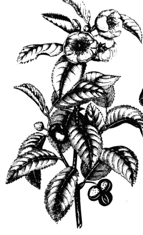

Története
A teát eredetileg orvosságként használták és mint gyógynövény került be először napi italaink közé.
Az egyik történet szerint Buddha fedezte fel a teát, midőn egy napon a kertben meditálva egy tealevél hullott csészéjébe.
Egy másik történet szerint amikor Bodhidarma lemetszette szemhéjait, hogy ne hulljon álom szemére meditáció közben, az első tearügyek ott pattantak ki, ahova szemhéjai hullottak.
Ismét más történet szerint i. e. 2737-ben Sen Nung kínai császár forró ivóvizébe utazása közben egy vad teanövényről levelek hullottak, sárgás-barna folyadékot eredményezve.
Kíváncsiságból megízlelte a keveréket, és megkedvelte ízét és frissítő hatását.
Az európai irodalomban a legelső utalást egy arab utazó tette a teára, miszerint a 879. esztendőt követően Kantonban a só és a tea volt a legnagyobb jövedéki forrás.
Marco Polo 1285-ben feljegyezte, hogy a kínai pénzügyminisztert azért mozdítottak el helyéről, mert önkényesen intézkedett a teára kivetett vámokat illetően és túl magasra emelte az árát.
A 14. században az európaiak egyre jobban felfedezték a Távol-Keletet, a hollandok egy utazásról teacserjével tértek vissza és azzal a hírrel, hogy ezekből a levelekből pompás üdítő italt főznek.
Eleinte csupán mint valamilyen "szárított füvet" emlegették, ami illatosabb, mint a szárított lóhere, de keserű ízű és nem volt ismeretes jótékony hatása.
Egy Szulejmán nevű arab kereskedő a 9. században szól róla, de ő is a tea szervírozására szóló készletet dicséri, nem magát a teát.
A portugál felfedezők voltak az első európaiak, akik Japánba látogatva először ízlelhették meg a teát 1560 környékén.
Az első komolyabb ismertető Giovanni Batista Ramusio tollából született 1565-ben, L. Almeida 1576-ban és Maffeno 1588-ban, majd Taxeira 1610-ben ír róla. 1610-ben megérkezik az Európába az első szállítmány tea a Holland Kelet-indiai Társaság hajóival, amely aztán monopóliumot szerez a tea szállítására.

A teanövény egy 19. századi ábrázolása
Ezért aztán a hollandok ismerik meg először a teát igazán. Szállítása gyékénnyel bélelt faládákban történt, hogy a sós tengeri levegő ne károsítsa a rakományt, az értékesebbeket ólomládákba csomagolták.
A tealevelek használata különféle volt, először nem ismerték a hagyományos kínai vagy japán teaszertartást, ezért előfordult, hogy magát a leforrázott tealevelet ették meg kenyérrel.
1568-ban Londonban már lehetett teát kapni a kávéházakban és hamarosan elterjedt helyes használata egy újságcikk eredményeképpen.
A legpatinásabb céget 1706-ban Thomas Twining alapította.
Az Arany Oroszlán nevű teaházában nemcsak fogyasztani lehetett a teát, hanem meg is vásárolhatták.
Ez az üzlet jelenleg is működik Londonban a Strand utcában.
Leghíresebb teakeverékük az Earl Grey ma is világhírű.
A bostoni teadélután a bostoniak felkelése volt 1773-ban, amikor a tea adója miatti tiltakozásul az angol teaszállítmányokat a tengerbe dobták (ez után hozták az 1773-as teatörvényt).
A britek hatalmas teakereslete nagy kereskedelmi hiányt okozott Kínával, ezért a Brit Birodalom a meghódított Indiában beindította saját teafeldolgozását.
A kínaiak csak ezüstért és zenélő órákért árulták a teát.
A kereskedelmi hiányt az indiai ópium eladásával próbálták kiegyenlíteni Kínával, ami az 1838–1842 közötti ópiumháborúhoz vezetett.
Great Tea Race – A teaklipperek versenye: Kína és London között az 1860-as évektől a Szuezi-csatorna megnyitásáig klipperekkel szállították a teát.
A klipperek az akkoriban épített leggyorsabb vitorláshajók voltak. A nagy teaverseny igazi társadalmi esemény volt a viktoriánus Londonban, fogadásokat kötöttek a leggyorsabb hajóra.
A Cutty Sark teaklipper 1922-ig hajózott, jelenleg hajómúzeum Londonban.
A tea kínai írásjele három részből áll: 
- cao ’fű’ (zölddel)
- ting ’ember’, aki a földön a helyén áll (pirossal)
- mu ’fa’ (kékkel jelölve)